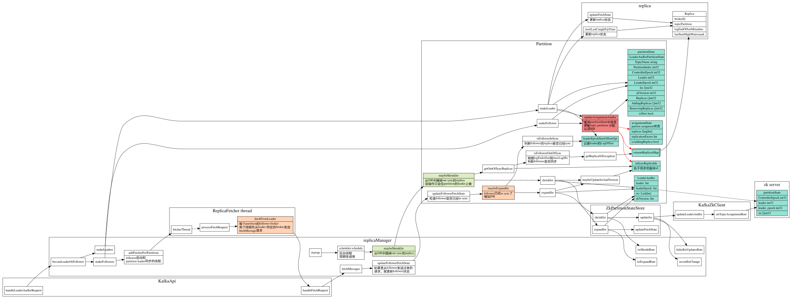
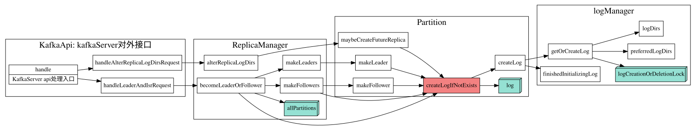
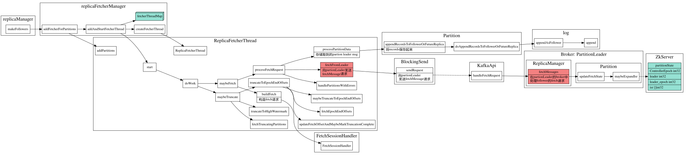
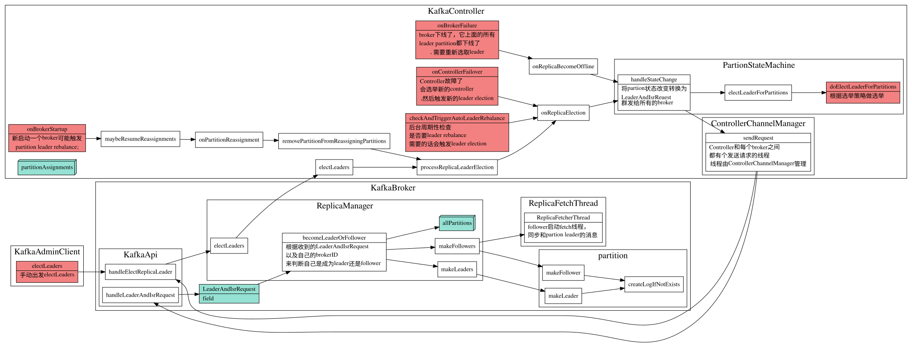
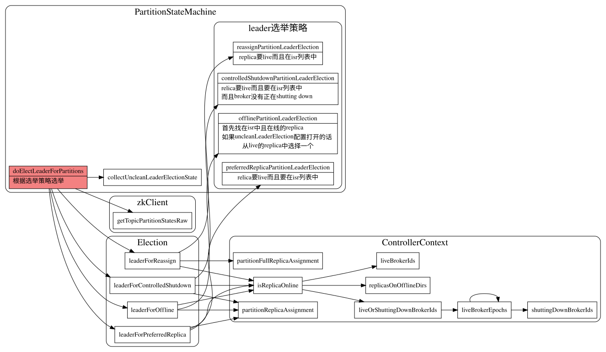

Kafka Partition
PartionState
PartionState中重要信息为当前partion的leader和ISR(in sync replica)的replicaId， PartitionState最终是存储在zk中的。
isr信息有maybeShrinkIsr和maybeExpandIsr这两个函数维护.
每个parition的replica follower都有一个replicaFetcher 线程，该线程负责从partition的leader中 获取消息，在parition leader中处理fetchMessage请求时，判断该follower是否达到in sync标准，将该replicaId加入到该partiton中的ISR中。
另外ReplicaManager后台会周期性的调用maybeShrinkIsr将outOfSync的replica从ISR中踢掉。

replica in/out sync state
判断replica是否处于in/out sync状态
private def isFollowerOutOfSync(replicaId: Int,
leaderEndOffset: Long,
currentTimeMs: Long,
maxLagMs: Long): Boolean = {
val followerReplica = getReplicaOrException(replicaId)
followerReplica.logEndOffset != leaderEndOffset &&
(currentTimeMs - followerReplica.lastCaughtUpTimeMs) > maxLagMs
}
private def isFollowerInSync(followerReplica: Replica, highWatermark: Long): Boolean = {
val followerEndOffset = followerReplica.logEndOffset
followerEndOffset >= highWatermark && leaderEpochStartOffsetOpt.exists(followerEndOffset >= _)
}
partition 对应log对象创建
在成为leader或者follower时会创建相应的log对象
log对象是什么时候创建的？parition创建时候就创建吗？

Partition sate 在zk中的存储
存储路径
Partition 的ISR信息存储在zk下
/broker/topics/{topic}/partitions/{partition}/state，
具体对应代码在zkData.scala中
// tp partition状态在zk中存储路径
object TopicPartitionStateZNode {
def path(partition: TopicPartition) = s"${TopicPartitionZNode.path(partition)}/state"
//other code
}
//tp路径
object TopicPartitionsZNode {
def path(topic: String) = s"${TopicZNode.path(topic)}/partitions"
}
object TopicZNode {
def path(topic: String) = s"${TopicsZNode.path}/$topic"
//othercode
}
//topics路径
object TopicsZNode {
def path = s"${BrokersZNode.path}/topics"
}
存储信息
paritionstate中存储信息如下
def decode(bytes: Array[Byte], stat: Stat): Option[LeaderIsrAndControllerEpoch] = {
Json.parseBytes(bytes).map { js =>
val leaderIsrAndEpochInfo = js.asJsonObject
val leader = leaderIsrAndEpochInfo("leader").to[Int]
val epoch = leaderIsrAndEpochInfo("leader_epoch").to[Int]
val isr = leaderIsrAndEpochInfo("isr").to[List[Int]]
val controllerEpoch = leaderIsrAndEpochInfo("controller_epoch").to[Int]
val zkPathVersion = stat.getVersion
LeaderIsrAndControllerEpoch(LeaderAndIsr(leader, epoch, isr, zkPathVersion), controllerEpoch)
}
}
LeaderAndIsrPartitionState定义在LeaderAndIsrRequest.json中,定义如下
"commonStructs": [
{ "name": "LeaderAndIsrPartitionState", "versions": "0+", "fields": [
{ "name": "TopicName", "type": "string", "versions": "0-1", "entityType": "topicName", "ignorable": true,
"about": "The topic name. This is only present in v0 or v1." },
{ "name": "PartitionIndex", "type": "int32", "versions": "0+",
"about": "The partition index." },
{ "name": "ControllerEpoch", "type": "int32", "versions": "0+",
"about": "The controller epoch." },
{ "name": "Leader", "type": "int32", "versions": "0+", "entityType": "brokerId",
"about": "The broker ID of the leader." },
{ "name": "LeaderEpoch", "type": "int32", "versions": "0+",
"about": "The leader epoch." },
{ "name": "Isr", "type": "[]int32", "versions": "0+",
"about": "The in-sync replica IDs." },
{ "name": "ZkVersion", "type": "int32", "versions": "0+",
"about": "The ZooKeeper version." },
{ "name": "Replicas", "type": "[]int32", "versions": "0+",
"about": "The replica IDs." },
{ "name": "AddingReplicas", "type": "[]int32", "versions": "3+", "ignorable": true,
"about": "The replica IDs that we are adding this partition to, or null if no replicas are being added." },
{ "name": "RemovingReplicas", "type": "[]int32", "versions": "3+", "ignorable": true,
"about": "The replica IDs that we are removing this partition from, or null if no replicas are being removed." },
{ "name": "IsNew", "type": "bool", "versions": "1+", "default": "false", "ignorable": true,
"about": "Whether the replica should have existed on the broker or not." }
]}
]
Replica sync(副本同步)
在broker成为一个follower时候，会启动一个fetchThread，用于和partition leader同步消息

Replica Leader Election
partition replica leader是由KafkaController来分配的.


partion leader选择策略
def offlinePartitionLeaderElection(assignment: Seq[Int], isr: Seq[Int], liveReplicas: Set[Int], uncleanLeaderElectionEnabled: Boolean, controllerContext: ControllerContext): Option[Int] = {
assignment.find(id => liveReplicas.contains(id) && isr.contains(id)).orElse {
if (uncleanLeaderElectionEnabled) {
val leaderOpt = assignment.find(liveReplicas.contains)
if (leaderOpt.isDefined)
controllerContext.stats.uncleanLeaderElectionRate.mark()
leaderOpt
} else {
None
}
}
}
def reassignPartitionLeaderElection(reassignment: Seq[Int], isr: Seq[Int], liveReplicas: Set[Int]): Option[Int] = {
reassignment.find(id => liveReplicas.contains(id) && isr.contains(id))
}
def preferredReplicaPartitionLeaderElection(assignment: Seq[Int], isr: Seq[Int], liveReplicas: Set[Int]): Option[Int] = {
assignment.headOption.filter(id => liveReplicas.contains(id) && isr.contains(id))
}
def controlledShutdownPartitionLeaderElection(assignment: Seq[Int], isr: Seq[Int], liveReplicas: Set[Int], shuttingDownBrokers: Set[Int]): Option[Int] = {
assignment.find(id => liveReplicas.contains(id) && isr.contains(id) && !shuttingDownBrokers.contains(id))
}